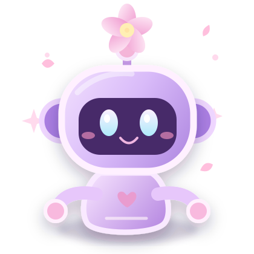

← Back to laboratories
EXPERIMENT 04 / 07 ✳ KEYPOINTS AND DESCRIPTORS
SURF, SIFT & ORB✿
Find distinctive corners and features; match two images and discover how local feature descriptors work.

01
Experiment settings
Make it yours. Let's get exploring.
02READY TO EXPLORE
Your vision, reimagined
Original input and algorithm outputs appear here.
Ready when you are!
Add an image (or try our flower) and press Run experiment to see something wonderful.
✦ ✿ ✧
✿Making some pixel magic...
Applying your computer vision algorithm.
✳ OBSERVATION NOTES
Capture a photo ✿
Camera access needs localhost or a secure HTTPS connection.